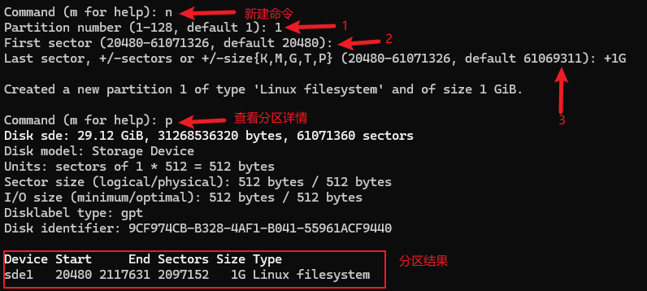

本文章为博主原创文章。遵循 CC 4.0 BY-SA 版权协议，转载请附上原文出处链接和本声明。
前面我们成功让WSL读取到Win系统的USB设备，下面来学习WSL下磁盘的管理。
df ：查看文件系统使用量，主要查看文件系统的使用量。
du ：评估文件系统的磁盘使用量，主要查看单个文件大小。
lsblk ：List Block Devices 列出系统中SSD、U盘等存储设备的信息
还记得前面提到的Ubuntu文件系统结构吗？想要读取u盘里的文件，需要把u盘挂载在某个目录下才能访问。
挂载就是“把设备上的文件系统接入Linux的目录结构中”。
/ 是起点）。Linux设计哲学：
/dev/xxx表示为一个文件，然后挂载到某个目录（如/mnt/usb）才可以访问。E:\, F:\），操作系统会自动识别并挂载。如果是U盘可以挂载在/dev/media/目录或/dev/mnt/目录
在使用usbipd使WSL读取到u盘后，运行如下命令：
1 | |
会看到类似这样的输出：
1 | |
这里 sdb1 是U盘的分区名。磁盘可能有很多分区嘛。
1 | |
1 | |
如果某个分区的文件系统不是自动识别的（报错），你可以指定类型挂载，例如：
1 | |
如果不清楚类型运行如下命令可以查看：
1 | |
1 | |
| 命令 | 含义 | 功能说明 |
|---|---|---|
m |
help | 显示所有可用命令 |
p |
显示当前分区表 | |
n |
new | 创建一个新分区（主分区或逻辑分区） |
d |
delete | 删除一个已有分区 |
t |
type | 修改分区的类型 ID |
l |
list | 列出所有分区类型 ID |
a |
toggle bootable | 切换分区的启动标志（设置/取消可引导分区） |
w |
write | 写入分区表并退出 |
q |
quit | 不保存更改，直接退出 |
g |
gpt | 创建新的 GPT 分区表 |
o |
dos | 创建新的空白 DOS (MBR) 分区表 |
v |
verify | 验证分区表的完整性 |
x |
expert | 进入专家模式（用于高级操作） |
1 | |
1 | |
1 | |

1：分区编号，直接回车接受默认编号。
2：起始扇区，默认值通常合适，直接回车即可。
3：结束扇区 or 分区大小，可以输入：扇区编号（直接回车使用剩余空间）或者手动输入大小（例如：+1G、+512M）
保存并退出。
1 | |
当用 fdisk 创建完一个分区后，这个分区只是“逻辑划分好了”，但还不能使用，必须要**格式化（创建文件系统）**才能真正读写数据。
格式化的本质是：
在分区上写入特定的文件系统结构（如 ext4、FAT32、NTFS 等）。
只有这样，操作系统才知道如何在这块区域内组织、存储和查找文件。
| 文件系统 | 说明 |
|---|---|
| ext4 | Linux常用，性能稳定，支持大文件 |
| vfat | FAT32，兼容Windows/Mac/Linux，不支持大文件 |
| ntfs | Windows常用，Linux可读写（需驱动） |
| exfat | 新型通用格式，支持大文件，跨平台兼容性好 |
make file system -type
1 | |
没有mkfs的先安装，不然报错：
1 | |
安装：
1 | |
可以输入命令：
1 | |
检查type
输出：
1 | |
创建时间：6月 12, 2025
最后更新：6月 14, 2025
字数统计：1.4k字
预计阅读：5min